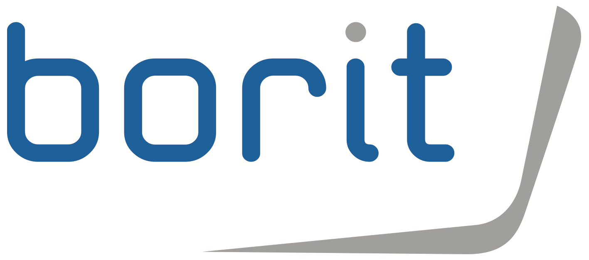

Mijn Werkervaring
Hier kom je meer te weten over mijn reeds opgedane ervaringen.
Stagiair Softwareontwikkelaar bij BORIT NV Als stagiair bij Borit NV werkte ik nauw samen met de IT manager aan de opstart van een nieuw ERP pakket.

Freelance Webontwikkelaar
Naast mijn stage bij BORIT NV heb ik als freelance webontwikkelaar
aan verschillende projecten gewerkt.
De toekomst...Ik ben vastbesloten om mijn
vaardigheden en expertise in te zetten en zo bij te dragen aan
betekenisvolle projecten die een positieve impact hebben op de
samenleving. Ik ga graag nieuwe uitdagingen aan en hou van het samenwerken
met getalenteerde individuen om innovatieve oplossingen te creëren.